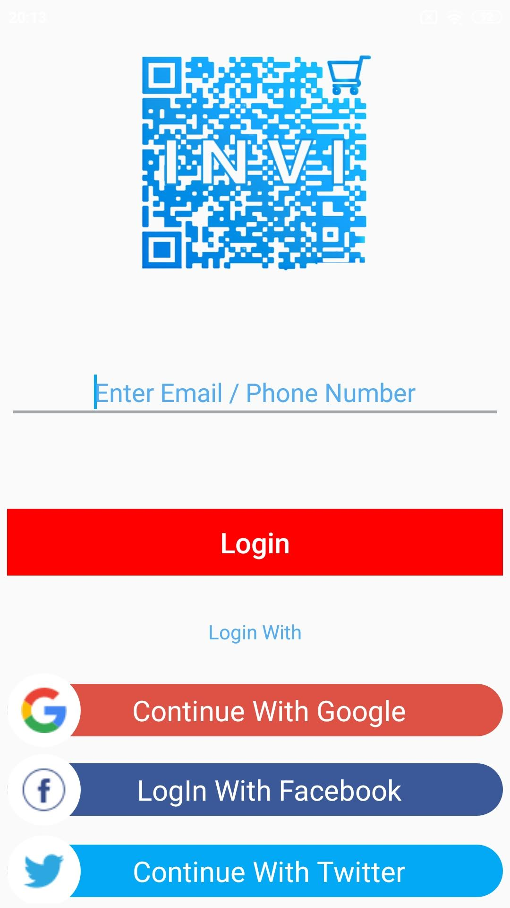
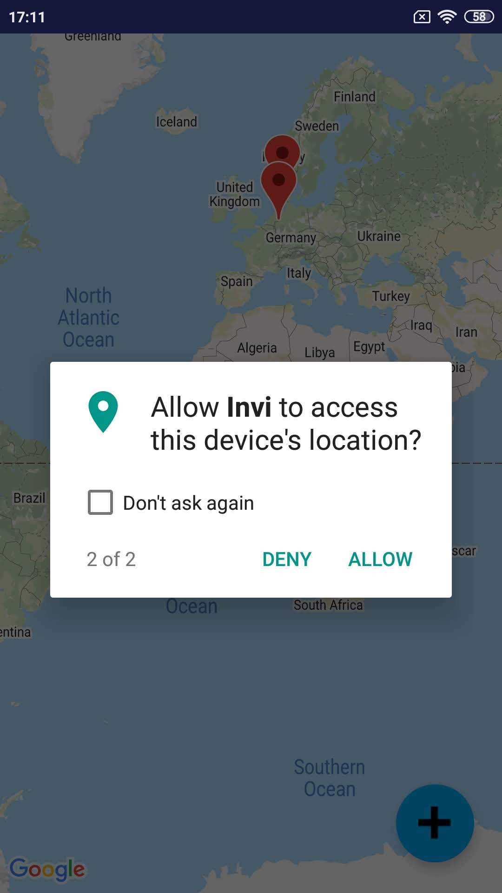
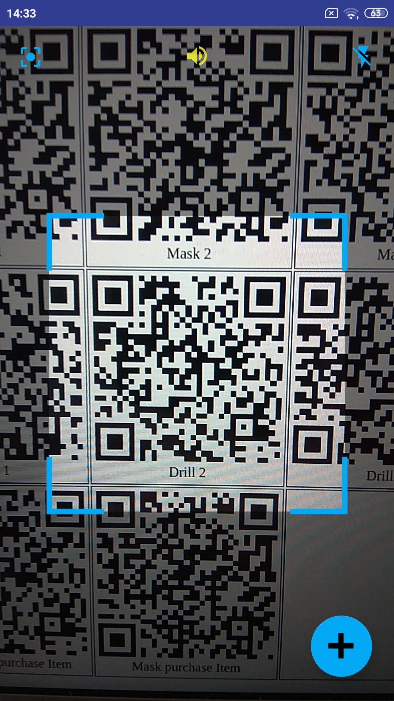
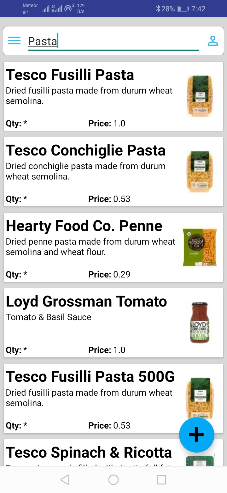
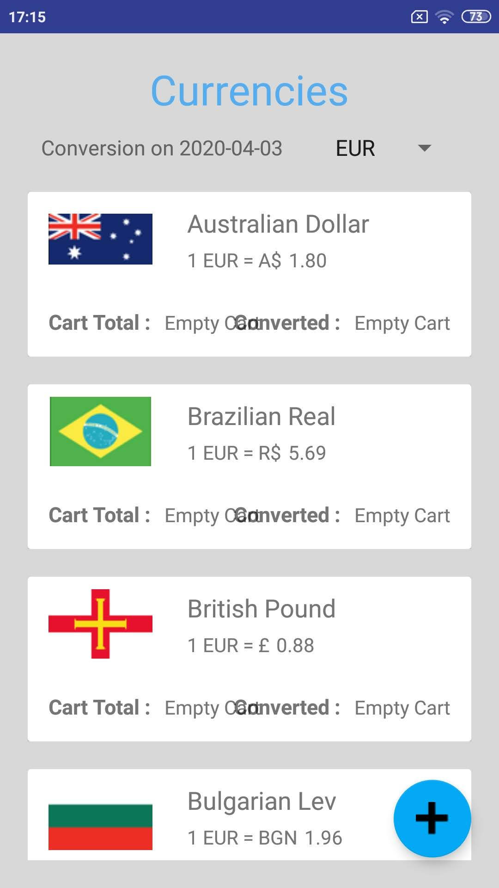
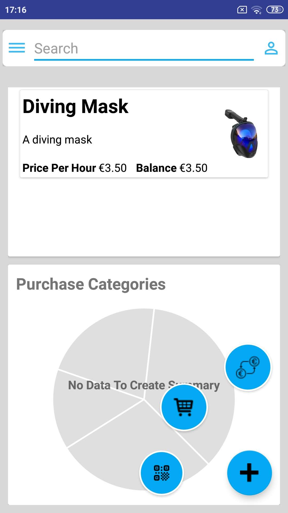
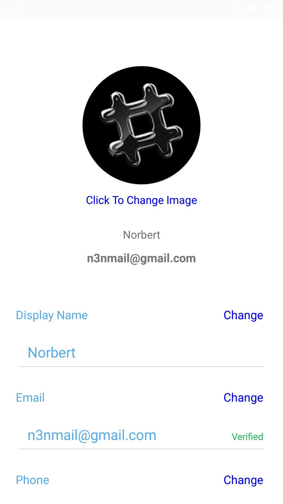

Invi was initailly an idea for inventory management for one of the University Of Limerick Clubs, but we quickly realised it’s potential and transformed it into self check out App. Currently with the help on Invi the user is able to check prices of several products in real-time. It uses the EAN number from the barcode and queries Tesco’s Api for the result. The price returned can be than quickly converted at current currency exchange rates into several currencies. Invi also allows to self check out rent items by scanning their QR Code it than tracks the time on lease and applies the applicable daily rates. It has been proven very useful even for our selves. Being able to price check within the store is an enormous convenience.
This guide is to guide the potential user on how to use Invi and show it’s attached benefits.
Currently Invi supports two methods or registration
1. Using Social Media Accounts Including Facebook, Twitter and Instagram
2. Using Email Address
The Login Screen

However, when signing up using one of the mentioned social accounts, the user still needs to verify both your email and phone number. Invi requires email and phone verification to make the account more secure but also to verify that it’s a real user signing up to the service. Another benefit of registering using social media accounts is that information such as the users profile photo, name and email address will be used by Invi.
If the user decided to sign up with his social media account, he will be redirected to a permission screen by the chosen social media to grant Invi permission to use his details -
Email
Name
Profile Photo
Once permission is granted the user will be then redirected to the registration screen where details such as his name and email will be perilled. The user is required than to enter a username and a password which has to meet Invi requirements, alternatively his/she can use Invi password generator.
Upon successful registration the user will be sent a verification email and an (OTP) One Time Password to his/her phone to verify their humanity. Until verified successfully the user will be presented with verification is complete.
Once verified the user will be able to also Log In using his phone number as Invi will send an (OTP) One Time Password to the users device, which is then valid for the duration of five minutes. Which is an attractive feature to many users as it takes the burden away of remembering the password. Using social media also offers this benefit or password less singing as the user is verified by his social media account.
Upon successful verification, the user will be welcomed by the home screen. Which shows a summary of recent transaction with the sum spent to date with along with the payment form of the transaction, items currently rented and a pie chart summarising the categories of the items the user recently purchased. The user will also be asked to grant permission for Invi to have access to the devices
Camera
NFC (Near Field Communication)
Network & Gps Localizing Service
Invi uses localization to show the user nearby stores, at the moment it shows nearby Tesco stores as well as stores that are stored on the database.
Swiping right you will be presented with the App’s navigation drawer which allows the user to navigate between different screens.
Quick sidebar menu access
.

.
On the bottom right corner, their is a Floating Action Button which will expand on click. Once it expands it gives the user access to the Barcode / Qr code Scanner, the live cart which also shows the current number of items in the cart and the real time currency exchange.
Once the user click on the Qr Code icon, he/she will be then redirected to scanner screen. Here the user can scan either items to check their price, where once the product is successfully found by Invi the user will be show with a dialog giving the products image, price and description. The user will also have the option to increase the amount of this items he/she wish to add to their cart.
Check Stores Based on Locality
Invi checks the users location and maps nearby stores on Google Maps
.

.
Qr Code / EAN-13 Scanner
Invi uses recognises both Qr Code and EAN-13 barcodes for product checkout or item rental.
.

.
.

.
Search for Products
The user can search for all available products on Invi’s database
.

.
Check Product Prices
Scan or search for a product usign its barcode number to check it’s price
.

.
Store Receipts on Your Phone
Once a transaction is complete, Invi automatically generates a receipt and stores it on your phone.
.

.
Check Latest Conversion Rates
With Invi the user can check the latest conversion rates.
Cart Total Automatically Converted
Each time a product is added to the cart Invi automatically converts the total to different currencies.
.

.
Summary of Purchases
Invi splits the products according to their category and presents the result on a pie chart.
.

.
.

.
Recent transaction
Invi shows recent transaction.
.

.
User Profile
Edit your details whenever you want.
.

.